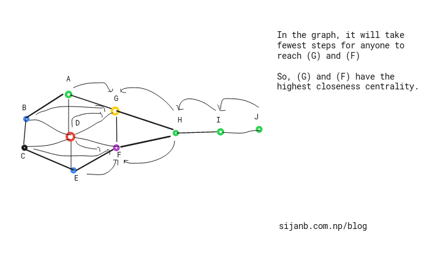

Network has been taken as a tool for describing complex systems or interactions around us. Few prominent complex systems are:
-
Our society where almost 7 billions individuals exist/ and the interactions between them in one or other ways.
-
Genes in our body, interactions between gene molecules ( Protein-Protein interaction networks)
Peoply usually visualize the network to see cluter/ densely linked clusters and try to analyze, predict relation between nodes, figure out similarity between nodes in the network.
Figuring out the central nodes/vertices is also an important network analysis process because centrality measures :
a. Existing influence of a node on other nodes
b. Information flow in and out from a node or towards it
c. Finding node/s which is/are acting as bridge between two different/big groups.. TEASER_END
Let's talk about few important centrality measures:
A. Degree Centrality :
Degree centrality is considered as a local measure which captures the direct influence of a node and its access to first hand information in the network.
Algorithm for calculationg degree centrality:
i. Rank all vertices based on their degree values
ii. Highest degree vertex will be considered as central one.
For a directed graph, we can divide this measure into two:
a) Indegree centrality : It can measured by counting number of edges going into a vertex. A node having highest indegree cenrality can be seen as 'popular node .i.e having many followers.
b) Outdegree centrality : It can measured by counting number of edges leaving a vertex. And a node with highest outdegree centrality can be seen as more social node i.e having good reach.
B. Closeness Centrality :
Closeness centrality says that important nodes are always stay close to other nodes. It can been as a measure of time to spread a message/information from a node to other nodes sequentially. It is calculated based on sum of the length of the shortest paths from a node to all other nodes.
Algorithm for calculating closeness centrality:
i. Calculate the shortest paths between a node to other nodes.
ii. Sum those distance values and take the reciprocal
iii. Repeat (i), (ii) for all nodes.
Since the sum of shortest paths between nodes u and v will be low if these two nodes are more central and will be high if those are less central, which is opposite to other centrality measures ( for Degree centrality: higher value signify higher centrality). Therefore, it is taken as inverse measure.
so, closeness centrality of a node 'v', closeness(v) = $ \frac{n-1}{\sum_{u=1}^{n-1}d(u,v)} $
where d(u,v) is the geodesic path = shortest path through a network between two vertices u and v.
NOTE : path from v to u is the number of edges along that path.

C. Betweenness Centrality
Betweenness centrality measures the bridgeness of node. It says that 'central nodes are those which act as bridge nodes'. We can calculate the number of times a node acts as bridge along the shortest path between two nodes.
Betweenness centrality of a node 'v' is betw(v) = $ \sum_{s,t \ne v} \frac{\delta_{st}(v)}{del_{st}} $
Where :
$ \delta_{st}(v) $ : The number of shortest paths between s and t via v.
and $ \delta_{st} $ : The number of shortest paths between s ant t.